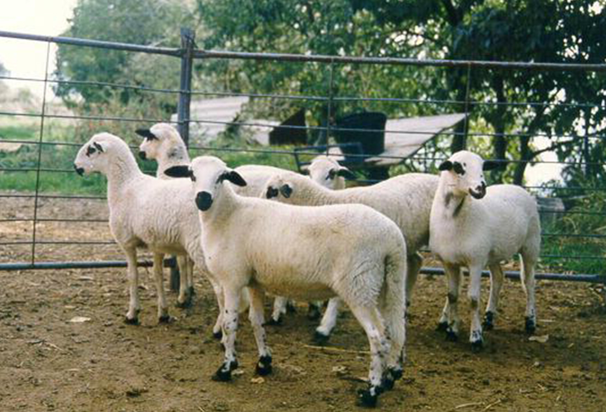

RACES D'OVELLES
L'ovella és un animal polivalent i les més de 200 races que n'existeixen actualment foren creades per cobrir diverses necessitats. Algunes fonts indiquen un total de cent races o més, però aquest nombre no és verificable.Gairebé totes les ovelles es poden classificar com a especialment aptes per produir un cert producte: llana, carn, llet, pell, o una combinació en el cas de les races de doble utilitat. Altres trets utilitzats per classificar les ovelles inclouen el color de la cara (generalment blanc o negre), la longitud de la cua, la presència o absència de banyes i la topografia per la qual s'ha desenvolupat la raça. Aquest últim tret és especialment important al Regne Unit, on les races són descrites com a races de terres altes (turons o muntanyes) o de terres baixes. Una de les races més comunes és l'ovella de cua grassa, una ovella de doble utilitat comuna a Àfrica i Àsia que es caracteritza pels grans dipòsits de greix de la seva cua. També es classifiquen les races segons com d'aptes són per produir un cert tipus de ramats. En general, les ovelles són de raça «de femelles» o de raça «de mascles». Les races de femelles són les que són robustes i tenen bones capacitats de reproducció i maternalització – poden substituir femelles reproductores en els ramats. Les races de mascles són elegides pel seu creixement ràpid i la qualitat de la carn i se les fa criar amb races de femelles per produir xais productors de carn. Les races de terres baixes i de terres altes també es creuen d'aquesta manera, fent criar les robustes femelles de les terres altes amb els mascles, més grans i de creixement més ràpid, de les terres baixes, per produir ovelles que reben el nom de mule. Les mules femelles poden ser creuats amb marrans productors de carn per produir xais de mercat de qualitat. Moltes races, especialment les rares i les primitives, no entren en cap categoria precisa.
Les races es classifiquen segons el tipus de llana que produeixen. Les races de llana fina són les que tenen una llana molt enrinxolada i densa, preferida per la manufactura de teixits. Moltes d'elles deriven de l'ovella merina i aquesta raça continua dominant la indústria ovina mundial. El rècord de l'ovella més valuosa correspon a un marrà d'ovella merina australià que fou venut per $16.000 AUD.[16] Les races de llana mitjana tenen una llana entre els extrems i generalment són races de producció de carn o races de mascles de creixement ràpid amb cares fosques. Algunes de les races de llana mitjana més importants, com l'ovella Corriedale, són races de doble utilitat, encreuaments de races de llana fina i de llana llarga i foren creades per formar ramats comercials d'alta producció. Les races de llana llarga són les ovelles més grans, amb llana llarga i un ritme de creixement lent. Les ovelles de llana llarga són especialment valuoses per creuar-les amb altres races per millorar-ne les qualitats. Per exemple, l'ovella Columbia fou creada per mitjà d'encreuaments entre mascles d'ovella Lincoln (una raça de llana llarga) i femelles d'ovella Rambouillet (una raça de llana fina). Les ovelles de llana basta, o de llana de catifa, tenen una llana de mida mitjana-llarga i tosca. Les races tradicionalment usades per produir llana de catifa varien molt, però el requeriment principal és que la llana no es faci malbé amb l'ús intens (com passaria amb la de les races més fines). Alguns ramaders d'aquests tipus d'ovella intenten utilitzar algunes d'aquestes races per altres fins, car la demanda de llana de catifa s'ha reduït. Algunes d'aquestes races sempre han estat principalment productores de carn.[17] Una classe menys important d'ovelles són les ovelles lleteres. Les races de doble utilitat, que poden tenir una utilitat primària com a productores de carn o de llana, solen tenir una utilitat secundària com a productores de llet, però hi ha algunes races que són utilitzades principalment per munyir-les. Aquestes ovelles produeixen una quantitat de llet més elevada i tenen una corba de lactància lleugerament més llarga.[18] La qualitat de la llet i el percentatge de greix i de proteïnes varien entre les races no lleteres, però el contingut de lactosa no varia.[18] Un últim grup de races d'ovella són les ovelles peludes, que no tenen llana. Les ovelles peludes s'assemblen a les primeres ovelles domesticades, abans del desenvolupament de les races llanoses i són criades per la seva carn i la seva pell. Pels productors de carn i de pell és més barat tenir ovelles peludes, car no cal esquilar-les.[17] Les ovelles peludes també són resistents als paràsits i el clima calorós.[14] Amb la posició dominant actual de l'agroindustria corporativa i el declini de les granges familiars, moltes races d'ovella estan en perill d'extinció. La Rare Breeds Survival Trust del Regne Unit llista 25 races nadiues amb només 3.000 animals registrats i l'American Livestock Breeds Conservancy en llista catorze amb menys de 10.000 animals.[19][20] La preferència per races amb característiques uniformes i un creixement ràpid ha limitat les races relíquies als marges de la indústria ovina.[17] Les que queden es mantenen gràcies als esforços d'organitzacions per la conservació, registres de races i grangers individuals que es dediquen a preservar-les .
RACES D'OVELLES CATALANES
RIPOLLESA
-

Descripció
L'ovella ripollesa és una raça d'ovella que es troba al nord-est de Catalunya, ocupant principalment les comarques de la Cerdanya, el Berguedà, el Ripollès, Osona, la Garrotxa, l’Alt Empordà, el Baix Empordà, el Gironès, la Selva, el Vallès Oriental i el Vallès Occidental, i rebent sovint els noms tradicionals de la seva localització (Berguedana, Ripollesa, Pirenaica, Caralpina (o Queralpina), Muntanyola de Pardines, Pirinenca, de St. Hilari, del Serrat, Solsonenca, o Vigatana, etc.). Des de les zones pirinenques s’ha anat desplaçant i ha arribat fins a les comarques tarragonines, on està més influenciada per altres races espanyoles -
Història
El seu origen podria ser l'encreuament d'ovelles tarasconines amb d'altres de merines i petites influències d'altres tipus com la segurenya, la manxega, l'aragonesa, la Laucane, la Suffolk o la Romànov que li hauria donat certa variabilitat regional. N'hi ha censades unes 70.000 si bé el llibre genealògic tan sols n'inclou una desena part. El 1987 es va formar l'Associació Nacional de Criadors d'Ovins de Raça Ripollesa. El 1991 es publicà l'estàndard oficial de la raça. El 1997, el ministeri de ramaderia va reconèixer l'ovella com a raça. -
Característiques
- Cap allargat
- Mamelles grosses i amb freqüència pigmentades.
- Tots dos sexes poden tenir banyes però les dels mascles són més desenvolupades amb dues voltes i puntes cap a fora.
- Orelles lleugerament caigudes.
- Capa i velló de color blanc.
- Llana fina.
- La llana de naixement pot ser peluda o rinxolada.
- Nas pigmentat.
XISQUETA
-
Descripció
L'ovella xisqueta o pallaresa és una raça d'ovella pròpia del Pirineu català, i concretament del Pallars i l'Alta Ribagorça. -

Història
La raça deriva del tronc Ovis aries ibericus que alhora és descendent d'ovelles asiàtiques. Actualment hi ha entre 12.000 i 15.000 individus amb un elevat grau de puresa. -
Característiques
- No tenen banyes.
- Cap petit.
- Orelles horitzontals una mica aixecades i de mida petita mitjana.
- Cua petita.
- Mucoses pigmentades.
- Pell sense plecs.
- Capa blanca excepte a la punta de les orelles al voltant dels ulls i als genitals on és negre.
- Velló blanc
- Els mascles pesen entre 40 i 45 kg i les femelles entre 30 i 35 kg.
- Fort instint maternal. A diferència d'altres races no hi ha rebuig de les criatures per part de les mares.
ARANESA
-
Descripció
L'ovella aranesa és la raça d'ovella pròpia de la Vall d'Aran. -
Història
Fenotípicament es fa evident que està emparentada amb l'ovella tarasconina dels Pirineus centrals occitans i de fet en podria ser una raça derivada. Els seus orígens més ancestrals podrien haver estat però la raça d'ovella merina, ja que es té constància que al segle XV ja hi havia exemplars a la zona. -
Característiques
- Dimorfisme sexual molt definit.
- Banyes més llargues en els mascles.
- Banyes normalment corbades cap enrere.
- Els mascles pesen entre 80 i 100 kg i les femelles entre 50 i 70.
- Front sense llana.
- Arcades orbitàries poc prominents
- Nas sense plecs.
- Cara llarga.
- Pell sense plecs i gruixuda.
- Ventre no voluminós.
- Llavis prims.
- Llana blanca.
- Orelles horitzontals.
- Extremitats llargues.
- Cua baixa i gruixuda.
- Hi ha sis varietats de capa:
- Negra: uniforme a vegades amb alguna taca blanca de poca extensió.
- Blanca: varietat més habitual.
- Mascarda: motejats de color fosc.
- Beret: virada.
- Capiroja: color roig més o menys uniforme.
- Pigallada: motejats de color vermell.